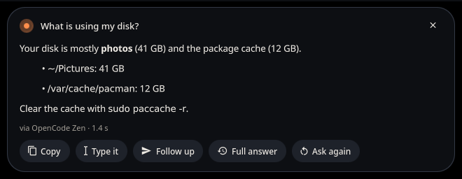

FRIDAY is a desktop assistant for Linux and Windows. Select some text or point at your screen, press a key, and get an answer in a small card, without opening a browser or switching windows.
Alpha. It runs and is tested in virtual machines and in CI; it hasn't had a pass on real hardware yet, so expect rough edges.
What it does
Answers stream in under the bar. From there you can copy, type into the window you were in, follow up, or ask a different model. The rest of FRIDAY stays out of the way until you ask.
A small CPU voice (tiny voca, about 50 MB) runs inside FRIDAY and starts speaking at once. No GPU, and nothing is sent anywhere to speak. Kokoro is there when you want something more expressive. On Linux, hold Super+Y to talk instead of type.
Volume, timers, battery and do not disturb are handled on your computer. The card says "nothing was sent".
"Put Firefox on workspace 2." "Pause the music." It does it, one step at a time, and asks before closing anything.
A read-only look at services, errors, disk, memory and battery, in plain words, with the one safest fix.
"Every weekday at 9, summarize my notes." Listed, pausable and deletable, and held to the same rules as your own asks.
FRIDAY OS offers Pocketdesk at first login: your phone becomes a screen, keyboard and remote for the computer, and can answer FRIDAY's "are you sure?" questions. It stays off until you turn it on.
Web search with links, only when you say "search" or "look up". Never in private mode.
What it sends, and when
$ friday sent TIME PROVIDER WHAT MASKED OUTCOME 09:14 OpenCode Zen text, 412 chars 0 ok 09:31 OpenCode Zen text + screenshot 2 ok # an illustration of the format, not real data. # "friday forget" shows what FRIDAY keeps and wipes it.
The real thing
A screenshot of FRIDAY Shell's answer card on FRIDAY OS. It comes in four colour themes (the switcher at the top of this page uses them) and a few bar styles, and follows your desktop theme if you use one.

Install
An Arch-based desktop with FRIDAY built in. Download the ISO from the releases page, write it to a USB stick and boot it. The installer asks what FRIDAY may do and can talk you through setup.
Get the ISOA per-user installer: no admin rights, no service. FRIDAY lives in your tray.
msiexec /i FRIDAY-<version>-x64.msi
Build the package from the repository, then start the daemon.
git clone https://github.com/sreevarshan-xenoz/project-friday cd project-friday/packaging/arch && makepkg -si systemctl --user enable --now friday-linux-daemon
friday doctor checks that everything is running.